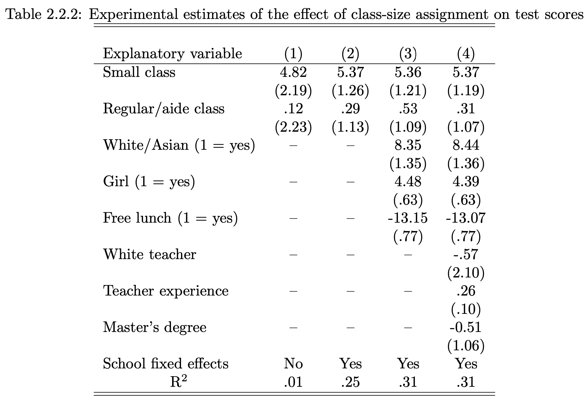

AREC 570 / ECON 530 · Unit 6
Readings and course handouts are available on Canvas.
Source: Angrist and Pischke (2009).
| Structural | Reduced-form / design-based |
|---|---|
| Specifies behavioral relationships | Focuses on variation identifying an effect |
| Recovers parameters within a model | Often targets a treatment or policy effect |
| Can support model-based counterfactuals | Often speaks most directly to the studied setting |
Both require assumptions. Their usefulness depends on the question.
Source: Timmins and Schlenker (2009).
Identification still requires informative data and defensible restrictions.
The source slides use fuel-economy regulation versus fuel taxation.
A model may need:
Which effects would a simple comparison of new-car fuel economy miss?
Potential gains: explicit mechanisms, feedbacks, welfare analysis, counterfactual simulation.
Challenges: specification, computational demands, identification, and sensitivity to behavioral assumptions.
A counterfactual prediction is conditional on the model remaining appropriate.
Fixed effects, thresholds, instruments, and random assignment are possible tools, not automatic guarantees.
For your proposed question:
Let be an individual’s outcome under treatment and under no treatment.
We observe only one potential outcome for each individual.
The missing counterfactual is the central problem.
The first term is the average treatment effect on the treated. The remaining difference is selection bias.
People who visit hospitals may have worse health than those who do not.
Source: Angrist and Pischke (2009).
Under random assignment:
With consistency and no interference, the population difference in means identifies the average treatment effect.
Randomization makes groups comparable in expectation; a realized sample can still be imbalanced.
In a model such as
a causal interpretation of needs assumptions about treatment assignment and the error term.
Controls can help with comparability or precision. They can also introduce problems if chosen without a causal argument.

Source: Angrist and Pischke; retained from Unit 6, slide 26.
Start with the table’s sample, units, and assignment process.
Suppose the population model is
but we omit . Under the usual exogeneity conditions,
Both the outcome relevance of and its association with matter.
Choose one identification example from the notes.
Specify treatment, population, assignment, outcome, and follow-up period.
If the treatment itself is ambiguous, refine the question first.
Complete:
Explain why a precisely estimated coefficient can still answer the wrong causal question.
AREC 570 / ECON 530 · Methodology of Economic Research